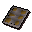
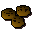

Unfinished crunchy
| Config name | unfinished_chocchip_crunchies |
| Item id | 2207 |
| Weight | 300g |
| Members | Yes |
| Tradeable | Yes |
| Stackable | No |
| Options | Eat |
| Category | gnome_unf_odd_crunchies |
| Defined in | scripts/skill_cooking/configs/gnome_cooking/crunchies.obj |
Unfinished crunchy
These crunchies are just missing those little finishing touches.
How to make
| Skill | Level | XP | Ingredients | Tool | How | Where | Makes |
|---|---|---|---|---|---|---|---|
| Cooking | 1 |  Half baked crunchy, | use on object | range | 1 can spoil into |
Used to make
| Skill | Level | XP | Ingredients | Tool | How | Where | Makes |
|---|---|---|---|---|---|---|---|
| Cooking | 1 | 30.0 | use on item |  Chocchip crunchies |
Referenced in scripts
scripts/_test/scripts/cheats/cheat_bank.rs2scripts/skill_cooking/scripts/gnome_cooking/gnome_crunchies.rs2scripts/skill_cooking/scripts/gnome_cooking/gnome_food_finish.rs2